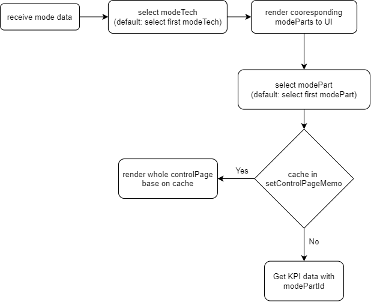

mode
Receive mode data after app initial loading.
Data structure
[
{
modeTechId: 4,
techName: "LTE",
modeParts: [
{
displayName: "Quick Start",
modePartId: 41
},
{
displayName: "Deep Dive",
modePartId: 42
}
]
}
]
Flow

Get KPI data with selected modePartId: /rest/initial-service/initial/kpi/${modePartId})
In addition to fetch KPI data:
Get available PU: /rest/dataprovider-service/session/daily/pu,
/rest/dataprovider-service/session/hourly/pu
Get available timeSetting: /rest/dataprovider-service/session/daily/date,
/rest/dataprovider-service/session/hourly/date
Update tech of network page: to sync with control page